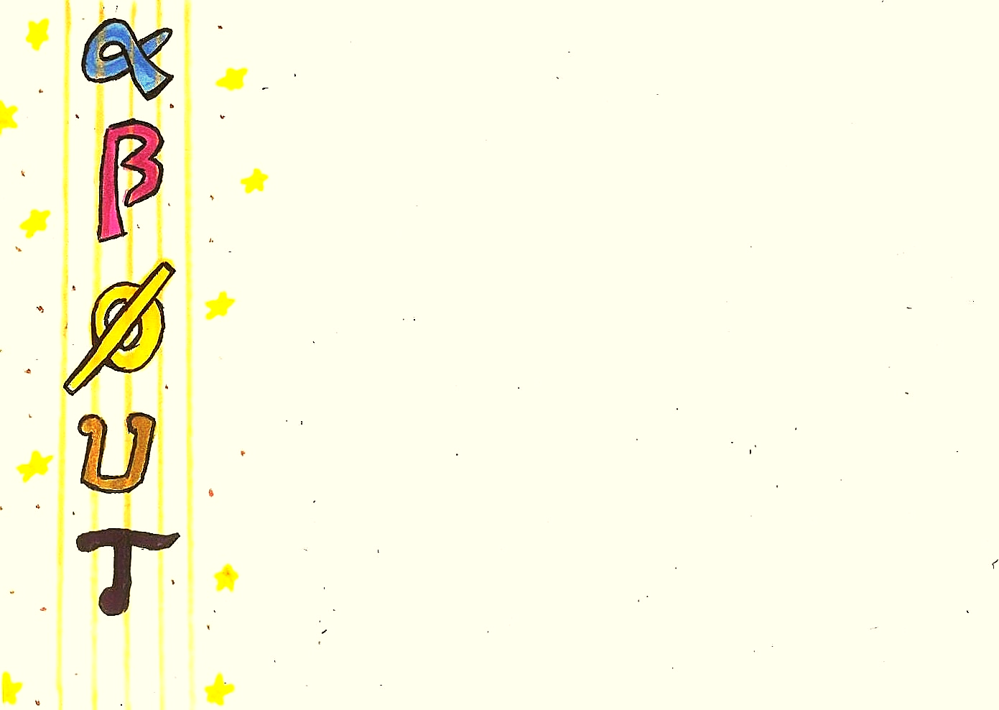

ABOUT ARIA 🎶
Somewhere between lines of code and melodies waiting to be discovered, there was Aria♡, a Hackclub YSWS(you ship we ship) that brought together two worlds, that being Programming and Coding. Aria was started around July 31 and sadly it ended on Oct 12. The idea was simple: Create your own music, experiment with different sounds and learn how music can be made through programming , using music tools like Strudel, Sonic Pi and TidalCycles. Participants could make their own compositions, join jam sessions, share their works and earn music-related rewards along da way. Experimenting with patterns, rhythms, instruments, loops and unexpected combination. Every lil change could lead somewhere new. A simple pattern could become a beat, a beat could become a composition and a composition could turn into something entirely their own.
What made Aria special was the freedom to experiment without needing to be an expert in either music and programming. You could start with absolutely nothing, try strange sounds/instruments, make mistakes, discover something unexpected and build your own track. And Perhaps that's what made the whole experience memorable: Aria reminded us that creativity doesn't always begin with knowing what you are doing, Sometimes it begins with simply being curious enough to try.
Aria was more than a space to ship projects. It was a lil meeting point for da people who loved to create, explore and even explode your ears. A reminder for you all that code doesn't always have to stay on screen but sometimes, it can become a melody that stays with you long after you've stopped writting it ~
My lil Aria story🎵
For me, Aria was my very first Hackclub YSWS to participate in and this it what makes it impossible for me to forget. Every first experience leaves behind a lil something, and Aria left me with a bunch of memories, lessons, a kind of happiness that I still find difficult to put into words and Specially friendship bonds. I spent so much of my time exploring, experimenting and creating during those days that I even had left doom-scrolling-insta wasting my time. There was always something new to discover, yet da best part for me was to create da Indian orchestral tracks, I loved learning about new instruments and on top of that i lapsed about 28hrs making those tracks from which I got da best Audio-technica headset, an Otomatone and a flute to play. Putting everything aside, I met da best people here, that being said I now have my own 'PAV-CULT' group and we are 'DA-VADAS' thanks to you all for being by my side, Ngl but in real life I really don't have many people to turn to AND aria gave me da people who would be there for me when I'm havin errors in my programming lol.
This lil corner of my website is my way of holding on to all of that. A place to collect the things I made, the things I discovered and da moments I don't want to lose to time. Maybe aria was just one chapter in a much longer journey, but it was DA chapter that introduced me to so much. At last but not least i would say that, Some projects are remembered for what we build, Others remember for how they make us feel and for me, ARIA WILL BE BOTH FOREVER ♡
A big thanks to Mihi, Kibbthefox, Partavacado, Sophie & Swarit for bringing out Aria, also a huge thanks to Ank, Abhiram, Yumekun, Kramov and Nove for helping out when i needed ♡